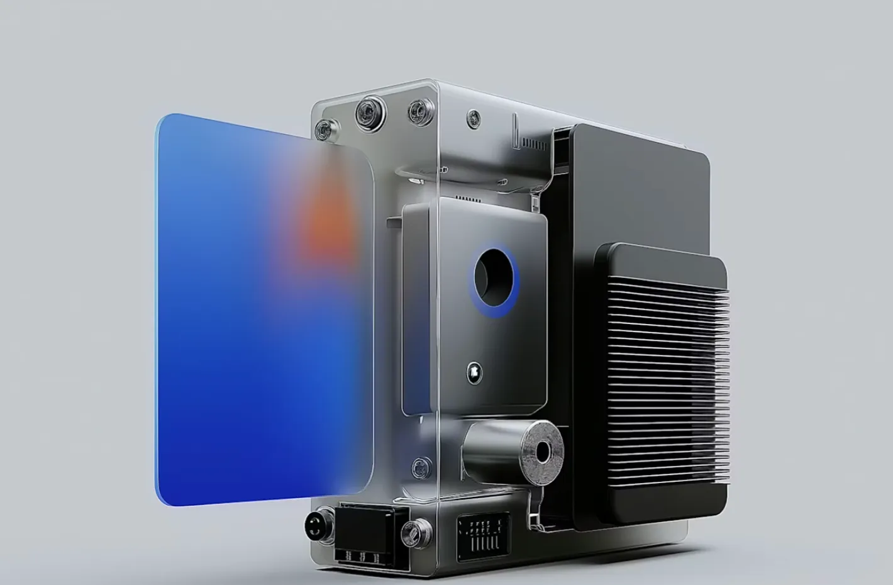
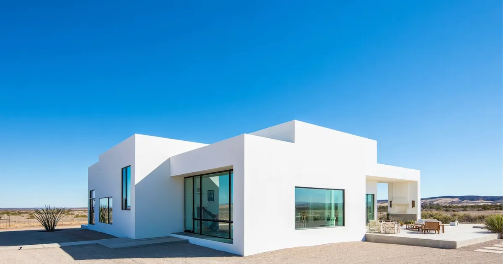

2026
BRoom
An electric vehicle platform built around modular hardware, real-time telemetry, and software-defined systems for efficiency, autonomy, and long-term scalability.
Electric Vehicle Platform

Featured Work
2026 - Now
2026
An electric vehicle platform built around modular hardware, real-time telemetry, and software-defined systems for efficiency, autonomy, and long-term scalability.
Electric Vehicle Platform
2026
An electric mobility subscription focused on real-time diagnostics, predictive maintenance, and low-friction commuter flows.
Product Systems

2026
An electric device platform built around efficient power management, embedded firmware, and production-ready industrial design for reliable, scalable deployment.
Hardware & Embedded Systems

Featured Projects
2026 - Now
2026
A modular home systems platform mapping energy, climate, and space constraints into actionable layouts, automation rules, and long-term upgrade paths.
Residential Systems Design

2026
A typography study exploring rhythm, hierarchy, and legibility under extreme scale, density, and motion constraints across digital interfaces.
Typography Experiments

2026
A design and systems exploration of electric truck interfaces, focusing on load awareness, range management, and driver decision-making under real-world constraints.
Transportation Systems
Education & Formation
Ongoing
Ongoing
Independent, long-form study driven by primary sources, reverse engineering, and applied experimentation rather than course completion.
Autodidactic
Advanced Focus
Training in typography, layout, proportion, and hierarchy with emphasis on constraint-based decision-making and visual clarity under pressure.
Design Education
Foundational
Practical study of modern frontend systems including component architectures, state management, performance constraints, and accessibility.
Software Engineering
Applied Theory
Study of complex systems, feedback loops, second-order effects, and failure modes across technical and organizational domains.
Systems Theory
Continuous Practice
Ongoing typographic analysis through reproduction, teardown of historical work, and high-frequency iteration to sharpen visual judgment.
Visual Literacy
Cross-Disciplinary
Study of trade-offs, prioritization, and decision frameworks informed by real-world constraints rather than idealized process models.
Product Thinking
Technical Literacy
Understanding of algorithms, data structures, and computational limits sufficient to reason about performance, scale, and system behavior.
Computer Science
Ongoing
Structured reading and synthesis across design, technology, philosophy, and economics to build durable mental models and language precision.
Intellectual Formation
Speeches & Talks
Selected Sessions
2026 — Product Design
A talk on designing UI when performance, latency, and imperfect data are the default—how to make trade-offs explicit and still ship clarity.
Visit Product Design2026 — Typography
Why type systems aren't decoration: rhythm, hierarchy, and density as tools for cognition, speed, and decision-making in complex interfaces.
Visit Typography2026 — Engineering Systems
Practical approaches to modeling UI states, edge cases, and failure modes so products behave predictably under real-world pressure.
Visit Engineering Systems2025 — Performance UX
Perceived performance tactics: skeletons, progressive disclosure, optimistic UI, and knowing when faking speed destroys trust.
Visit Performance UX2024 — Practice
A framework for critique that produces better work by isolating constraints, naming decisions, and killing ambiguity fast.
Visit Practice